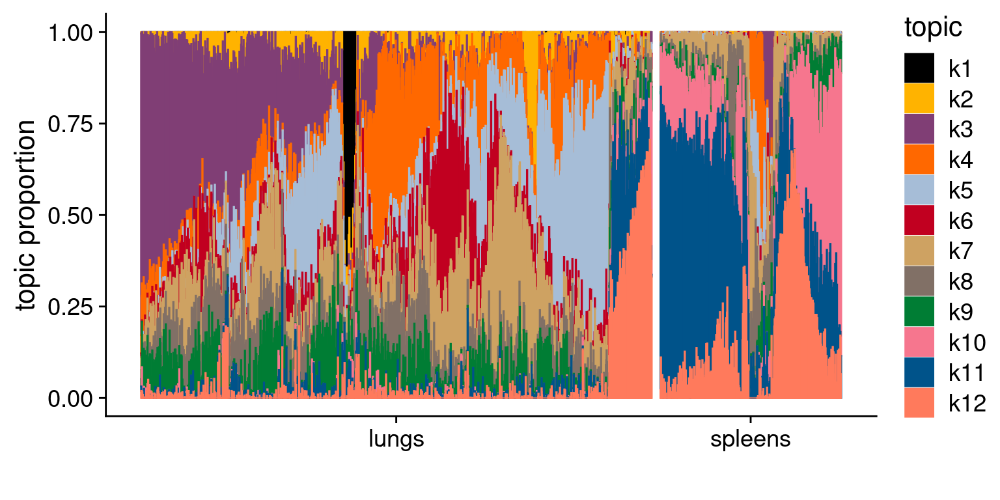

cross-tissue DE analysis with fastTopics
Jing Gu
2024-04-29
Last updated: 2024-05-09
Checks: 7 0
Knit directory: lung_lymph_scMultiomics/
This reproducible R Markdown analysis was created with workflowr (version 1.7.1). The Checks tab describes the reproducibility checks that were applied when the results were created. The Past versions tab lists the development history.
Great! Since the R Markdown file has been committed to the Git repository, you know the exact version of the code that produced these results.
Great job! The global environment was empty. Objects defined in the global environment can affect the analysis in your R Markdown file in unknown ways. For reproduciblity it’s best to always run the code in an empty environment.
The command set.seed(20221229) was run prior to running
the code in the R Markdown file. Setting a seed ensures that any results
that rely on randomness, e.g. subsampling or permutations, are
reproducible.
Great job! Recording the operating system, R version, and package versions is critical for reproducibility.
Nice! There were no cached chunks for this analysis, so you can be confident that you successfully produced the results during this run.
Great job! Using relative paths to the files within your workflowr project makes it easier to run your code on other machines.
Great! You are using Git for version control. Tracking code development and connecting the code version to the results is critical for reproducibility.
The results in this page were generated with repository version 9c7a423. See the Past versions tab to see a history of the changes made to the R Markdown and HTML files.
Note that you need to be careful to ensure that all relevant files for
the analysis have been committed to Git prior to generating the results
(you can use wflow_publish or
wflow_git_commit). workflowr only checks the R Markdown
file, but you know if there are other scripts or data files that it
depends on. Below is the status of the Git repository when the results
were generated:
Ignored files:
Ignored: analysis/.RData
Ignored: analysis/.Rhistory
Untracked files:
Untracked: analysis/.ipynb_checkpoints/
Untracked: analysis/test_GO_enrichment.ipynb
Untracked: output/fastTopics
Unstaged changes:
Deleted: code/run_fastTopic.R
Deleted: lung_immune_fine_mapping.Rproj
Note that any generated files, e.g. HTML, png, CSS, etc., are not included in this status report because it is ok for generated content to have uncommitted changes.
These are the previous versions of the repository in which changes were
made to the R Markdown
(analysis/cross_tissue_DE_u19_fastTopics.Rmd) and HTML
(docs/cross_tissue_DE_u19_fastTopics.html) files. If you’ve
configured a remote Git repository (see ?wflow_git_remote),
click on the hyperlinks in the table below to view the files as they
were in that past version.
| File | Version | Author | Date | Message |
|---|---|---|---|---|
| html | 68d9e18 | Jing Gu | 2024-05-09 | Build site. |
| Rmd | 7ca45f6 | Jing Gu | 2024-05-09 | cross-tissue comparison |
| Rmd | 7a45261 | Jing Gu | 2024-05-08 | cross-tissue comparison with topic modeling |
GoM DE analysis on u19 dataset
Model fitting
Parameters:
N_updates = 150 N_topics = 12
Model evaluation
check the convergence

| Version | Author | Date |
|---|---|---|
| 68d9e18 | Jing Gu | 2024-05-09 |
Model overview:
Number of data rows, n: 53647
Number of data cols, m: 17420
Rank/number of topics, k: 12
Evaluation of model fit (170 updates performed):
Poisson NMF log-likelihood: -1.997995557900e+08
Multinomial topic model log-likelihood: -1.995509032083e+08
Poisson NMF deviance: +2.634951598369e+08
Max KKT residual: +1.430262e-02Set show.size.factors = TRUE, show.mixprops = TRUE and/or show.topic.reps = TRUE in print(...) for more information
| Version | Author | Date |
|---|---|---|
| 68d9e18 | Jing Gu | 2024-05-09 |
Warning: Using `size` aesthetic for lines was deprecated in ggplot2 3.4.0.
ℹ Please use `linewidth` instead.
This warning is displayed once every 8 hours.
Call `lifecycle::last_lifecycle_warnings()` to see where this warning was
generated.
| Version | Author | Date |
|---|---|---|
| 68d9e18 | Jing Gu | 2024-05-09 |
Visualize topics with structural plots
- plot by cell-types

| Version | Author | Date |
|---|---|---|
| 68d9e18 | Jing Gu | 2024-05-09 |
- plot by tissue

| Version | Author | Date |
|---|---|---|
| 68d9e18 | Jing Gu | 2024-05-09 |
- plot by tissue and cell-type

| Version | Author | Date |
|---|---|---|
| 68d9e18 | Jing Gu | 2024-05-09 |
Validate topics with enrichment test
Identify topics correlated with differences between tissue
- test whether any topic is associated with transcriptional differences across tissue \[ L = \beta X_{\text{tissue}} + \text{Covariates} + \epsilon \]
- perform T-test to see whether topic proportions between two tissues are significantly different
Density plot for topic proportions between tissue across cell types
X-axis denotes percentage format of topic proportion
[1] "k1"
| Version | Author | Date |
|---|---|---|
| 68d9e18 | Jing Gu | 2024-05-09 |
[1] "k2"
| Version | Author | Date |
|---|---|---|
| 68d9e18 | Jing Gu | 2024-05-09 |
[1] "k3"
| Version | Author | Date |
|---|---|---|
| 68d9e18 | Jing Gu | 2024-05-09 |
[1] "k4"
| Version | Author | Date |
|---|---|---|
| 68d9e18 | Jing Gu | 2024-05-09 |
[1] "k5"
| Version | Author | Date |
|---|---|---|
| 68d9e18 | Jing Gu | 2024-05-09 |
[1] "k6"
| Version | Author | Date |
|---|---|---|
| 68d9e18 | Jing Gu | 2024-05-09 |
[1] "k7"
| Version | Author | Date |
|---|---|---|
| 68d9e18 | Jing Gu | 2024-05-09 |
[1] "k8"
| Version | Author | Date |
|---|---|---|
| 68d9e18 | Jing Gu | 2024-05-09 |
[1] "k9"
| Version | Author | Date |
|---|---|---|
| 68d9e18 | Jing Gu | 2024-05-09 |
[1] "k10"
| Version | Author | Date |
|---|---|---|
| 68d9e18 | Jing Gu | 2024-05-09 |
[1] "k11"
| Version | Author | Date |
|---|---|---|
| 68d9e18 | Jing Gu | 2024-05-09 |
[1] "k12"
| Version | Author | Date |
|---|---|---|
| 68d9e18 | Jing Gu | 2024-05-09 |
Perform t-test while adjusting for confounders
Procedure
Test mean difference between tissue one donor at a time and then do meta-analysis with Fisher’s method
Results
X-axis denotes cell types and y-axis denotes the topics. For major cell types, we saw majority of topics have significant differences in proportions between tissue.

| Version | Author | Date |
|---|---|---|
| 68d9e18 | Jing Gu | 2024-05-09 |
R version 4.2.0 (2022-04-22)
Platform: x86_64-pc-linux-gnu (64-bit)
Running under: CentOS Linux 7 (Core)
Matrix products: default
BLAS/LAPACK: /software/openblas-0.3.13-el7-x86_64/lib/libopenblas_haswellp-r0.3.13.so
locale:
[1] LC_CTYPE=en_US.UTF-8 LC_NUMERIC=C LC_TIME=C
[4] LC_COLLATE=C LC_MONETARY=C LC_MESSAGES=C
[7] LC_PAPER=C LC_NAME=C LC_ADDRESS=C
[10] LC_TELEPHONE=C LC_MEASUREMENT=C LC_IDENTIFICATION=C
attached base packages:
[1] grid stats graphics grDevices utils datasets methods
[8] base
other attached packages:
[1] ComplexHeatmap_2.14.0 colorRamp2_0.1.0 tidyr_1.3.1
[4] dplyr_1.1.4 poolr_1.1-1 cowplot_1.1.3
[7] ggplot2_3.5.1 fastTopics_0.6-175 Matrix_1.6-5
loaded via a namespace (and not attached):
[1] matrixStats_1.2.0 fs_1.6.4 RColorBrewer_1.1-3
[4] doParallel_1.0.17 progress_1.2.3 httr_1.4.7
[7] rprojroot_2.0.4 tools_4.2.0 bslib_0.7.0
[10] utf8_1.2.4 R6_2.5.1 irlba_2.3.5.1
[13] BiocGenerics_0.44.0 uwot_0.2.2 lazyeval_0.2.2
[16] colorspace_2.1-0 GetoptLong_1.0.5 withr_3.0.0
[19] tidyselect_1.2.1 prettyunits_1.2.0 compiler_4.2.0
[22] git2r_0.33.0 cli_3.6.2 Cairo_1.6-2
[25] plotly_4.10.4 labeling_0.4.3 sass_0.4.9
[28] scales_1.3.0 SQUAREM_2021.1 quadprog_1.5-8
[31] pbapply_1.7-2 mixsqp_0.3-54 stringr_1.5.1
[34] digest_0.6.35 rmarkdown_2.26 RhpcBLASctl_0.23-42
[37] pkgconfig_2.0.3 htmltools_0.5.8.1 highr_0.10
[40] fastmap_1.1.1 invgamma_1.1 htmlwidgets_1.6.4
[43] rlang_1.1.3 GlobalOptions_0.1.2 rstudioapi_0.15.0
[46] farver_2.1.1 shape_1.4.6 jquerylib_0.1.4
[49] generics_0.1.3 jsonlite_1.8.8 gtools_3.9.5
[52] magrittr_2.0.3 S4Vectors_0.36.2 Rcpp_1.0.12
[55] munsell_0.5.1 fansi_1.0.6 lifecycle_1.0.4
[58] stringi_1.7.6 whisker_0.4.1 yaml_2.3.8
[61] mathjaxr_1.6-0 Rtsne_0.17 parallel_4.2.0
[64] promises_1.3.0 ggrepel_0.9.5 crayon_1.5.2
[67] lattice_0.22-5 circlize_0.4.15 hms_1.1.3
[70] knitr_1.46 pillar_1.9.0 rjson_0.2.21
[73] stats4_4.2.0 codetools_0.2-19 glue_1.7.0
[76] evaluate_0.23 data.table_1.15.4 RcppParallel_5.1.7
[79] vctrs_0.6.5 png_0.1-8 httpuv_1.6.14
[82] foreach_1.5.2 gtable_0.3.5 purrr_1.0.2
[85] clue_0.3-65 ashr_2.2-63 cachem_1.0.8
[88] xfun_0.43 later_1.3.2 viridisLite_0.4.2
[91] truncnorm_1.0-9 tibble_3.2.1 iterators_1.0.14
[94] IRanges_2.32.0 cluster_2.1.6 workflowr_1.7.1